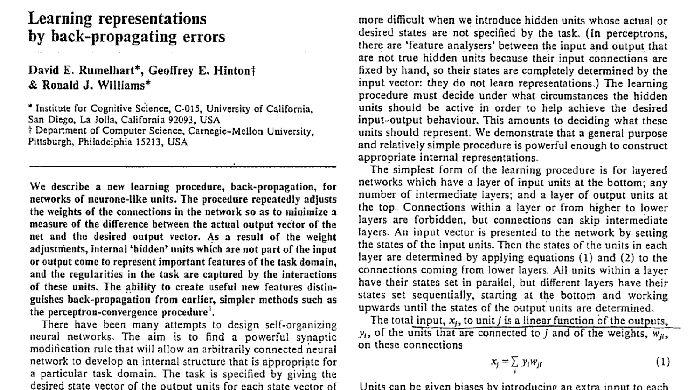

jk: The Chain Rule already existed (17th century; Newton, Leibniz).
-
Going back to the original perceptron, there were two main
problems:
- The network needs more hidden ("in-between") layers.
-
This can result in an explosion in the number of model
parameters - need an efficient way to train the model (determine
all of the model weights).
-
Backpropagation was the key breakthrough here. Students of
Calculus: In essence, this is an application of the Chain Rule.

https://www.r-bloggers.com/2017/05/training-neural-networks-with-backpropagation-original-publication/